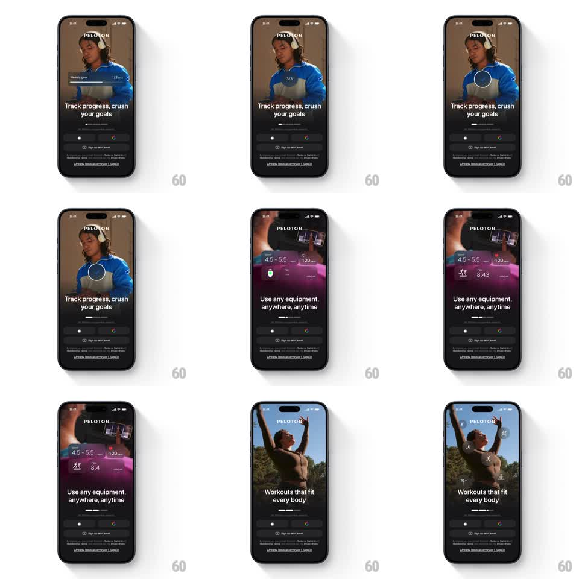

Media
Frame-by-frame

Rebuild this animation 1:1: Peloton's intro carousel - auto-advancing onboarding pages ("Track progress, crush your goals", "Use any equipment, anywhere, anytime", "Workouts that fit every body") over full-bleed photos, with morphing stat cards, ticking counters (4.5-5.5, 120, Pace 8:45), and a radial stagger of member avatars fanning around the subject.

Rebuild this animation 1:1: Peloton's intro carousel - auto-advancing onboarding pages ("Track progress, crush your goals", "Use any equipment, anywhere, anytime", "Workouts that fit every body") over full-bleed photos, with morphing stat cards, ticking counters (4.5-5.5, 120, Pace 8:45), and a radial stagger of member avatars fanning around the subject.
## Integration
Integration: stack-agnostic spec - springs given as stiffness/damping, timed motions as duration + curve; map every value to your framework and animation library of choice.
## Scene
Dark screen: PELOTON logo top-center, a full-bleed athlete photo per page, headline bottom-left over a dark gradient, page dots, and fixed sign-in buttons (Apple, Google, "Sign up with email", "Sign in") at the bottom. Mid-scene: floating UI props - a "Weekly goal" progress card, stat chips (mph range, watt count, pace), and avatar bubbles with like icons.
## Motion spec
Pattern: auto-carousel with prop choreography, ~4s per page.
- Advance: pages crossfade + slide every 4s (400ms, ease-in-out); the active dot stretches (width 8px -> 20px, 300ms).
- Counters: stat chips count up from 0 to their values (4.5-5.5, 120, 8:45) with ease-out over 900ms, 100ms stagger between chips.
- Radial reveal: avatar bubbles fan out around the subject's head from a point (spring ~280/18, 60ms stagger) with a soft pop (scale 0 -> 1).
- Card morph: the "Weekly goal" card slides up and expands (height grow, 350ms, ease-out) as its ring fills to 72% (800ms).
## Calibration
- Props layer over the photo but under the headline and buttons.
- Page dots sit above the buttons and track auto-advance.
## Reduced motion
Pages fade (250ms); counters show final values; no radial fan.
## Don't miss
- The counter tick and radial pop overlap - stats land while avatars are still settling.
- A purple glow wash appears on the equipment page behind the chips.